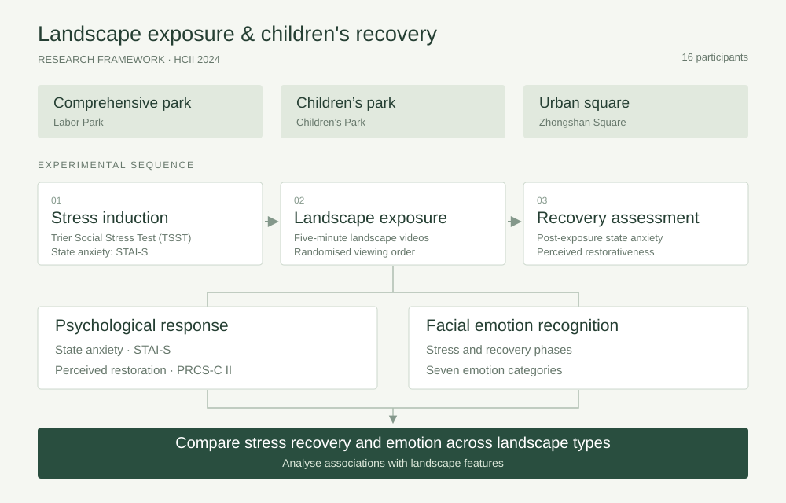

2023 · Project leader · HCII 2024
Landscapes for Children’s Stress Recovery
Effects of Different Landscape Types on Children’s Stress Recovery and Emotion

Research focus
This study examined landscape exposure, emotional responses and perceived restoration in 16 children aged 6–15. It combined facial emotion recognition with psychological assessments to inform child-friendly landscape design.
Approach and contribution
- Comparison of comprehensive parks, children’s parks and urban squares
- Facial emotion recognition and self-reported psychological assessments
- Experimental design, statistical analysis and manuscript preparation
Outcomes and status
Presented at HCII 2024 in Washington, DC, and published in Lecture Notes in Computer Science, volume 14685. The project received the Excellent Research Project Award.
Read the published paper ↗